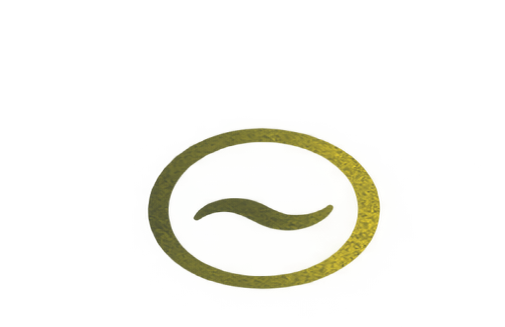
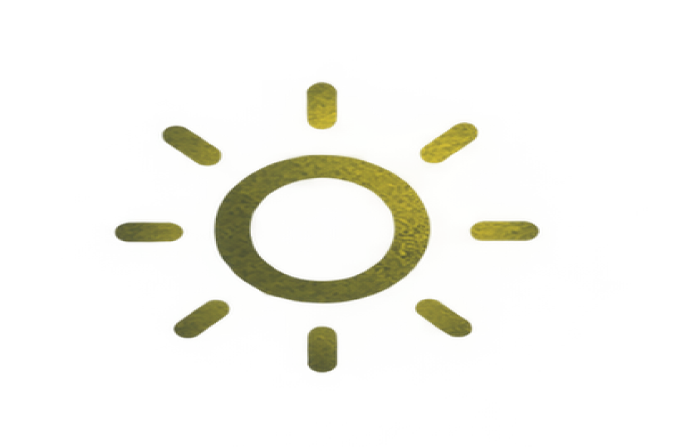
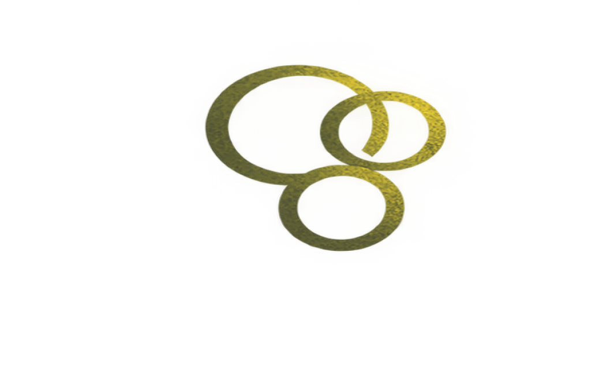
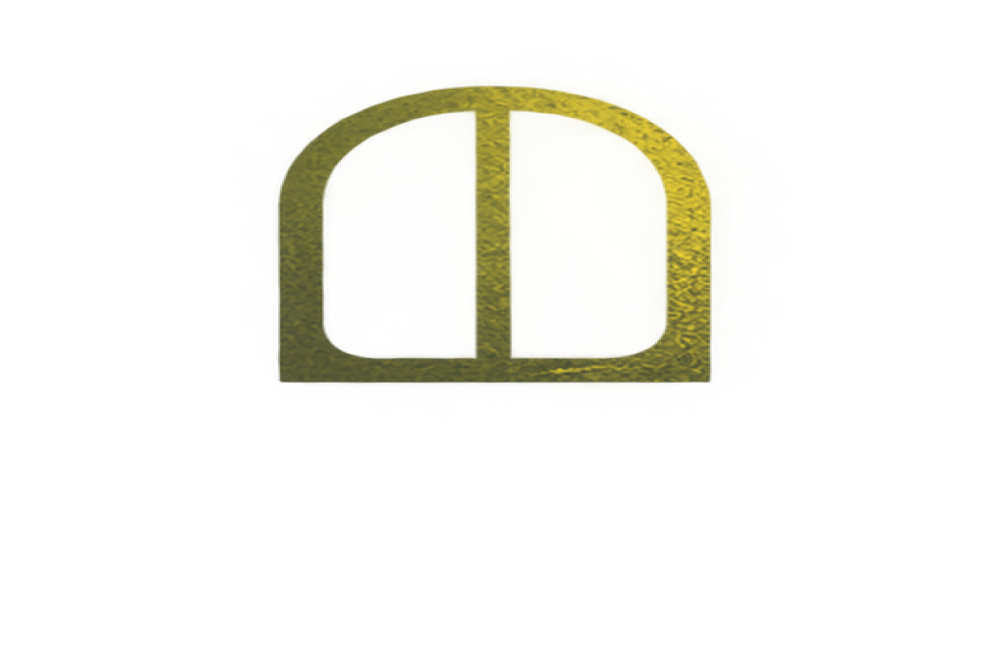
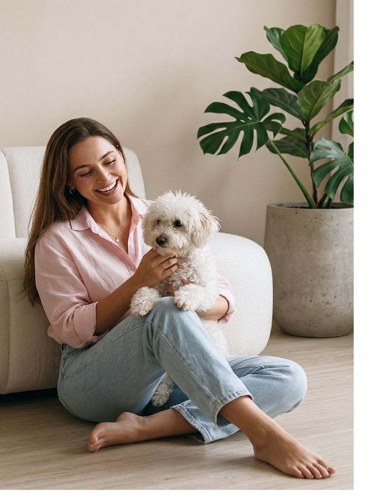

Ansiedade e pânico
Quando a preocupação não dá trégua e a angústia atrapalha o seu dia a dia, este é um espaço para respirar e entender o que está acontecendo.
Terapia Cognitivo Comportamental
Agendar consultaUm espaço seguro para entender e acolher suas emoções.

Quando a preocupação não dá trégua e a angústia atrapalha o seu dia a dia, este é um espaço para respirar e entender o que está acontecendo.

Sentir tudo com muita força pode ser cansativo. Aqui, você pode conhecer melhor o seu jeito de sentir e encontrar formas de lidar com ele.
Falta de energia, vazio ou perda de interesse pelo que antes fazia sentido. Você não precisa atravessar isso sem apoio.

Conflitos com família, parceiro(a) ou trabalho pesam. Podemos olhar juntos para esses vínculos e para a construção de limites saudáveis.

Despedidas e mudanças importantes deixam marcas. Aqui, você pode elaborar o que viveu no seu tempo.
Se você se cobra demais e sente que nunca é suficiente, podemos construir uma relação mais gentil com você mesmo(a).
Conteúdo informativo, que não substitui avaliação psicológica individual.
A Abordagem
A TCC é uma psicoterapia estruturada que trabalha a relação entre pensamentos, emoções e comportamentos. Em conjunto, buscamos estratégias que contribuam para o seu bem-estar.

Quem sou eu
Olá, eu sou a Ana Paula. Sou psicóloga clínica há oito anos, com formação em Terapia Cognitivo-Comportamental, uma abordagem que une método e sensibilidade, sempre com base científica e muito cuidado com o que é único em cada pessoa.
Acredito que a terapia é, antes de tudo, um encontro: um espaço onde você pode chegar como está, sem pressa e sem julgamento, e se sentir verdadeiramente ouvido ali a gente entende melhor as emoções, enxerga novas possibilidades e constrói caminhos mais leves pra atravessar o que te trouxe até aqui.
Se você busca se conhecer com mais profundidade e crescer no seu tempo, estou aqui pra caminhar ao seu lado, com ética e presença.
Como funciona
Um ambiente seguro, ético e confidencial desenhado para respeitar seu tempo, suas demandas e suas escolhas individuais.
Conversamos sobre sua demanda e expectativas. 50 minutos dedicados à escuta mútua, sem compromisso de continuidade.
Primeiro contatoDefinimos juntos os objetivos terapêuticos, a frequência das sessões e o formato de atendimento (online ou presencial).
AlinhamentoCompreendemos padrões de pensamento e emoção e aplicamos estratégias eficientes no seu cotidiano.
DesenvolvimentoAvaliamos periodicamente a evolução das conquistas e ajustamos o caminho. O processo respeita integralmente o seu ritmo.
AutonomiaDê o primeiro passo
Agende uma sessão inicial de acolhimento. Um tempo reservado para esclarecer dúvidas e sentir como a abordagem pode te ajudar.